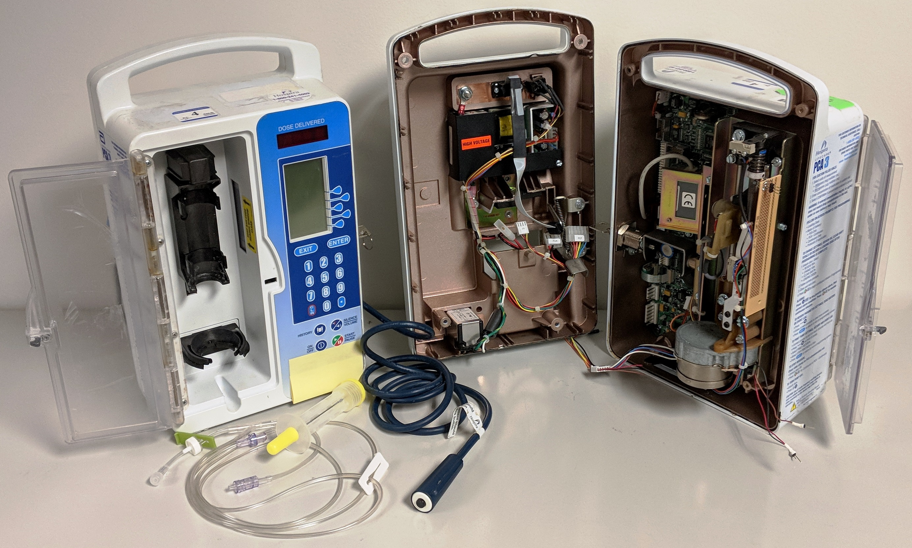
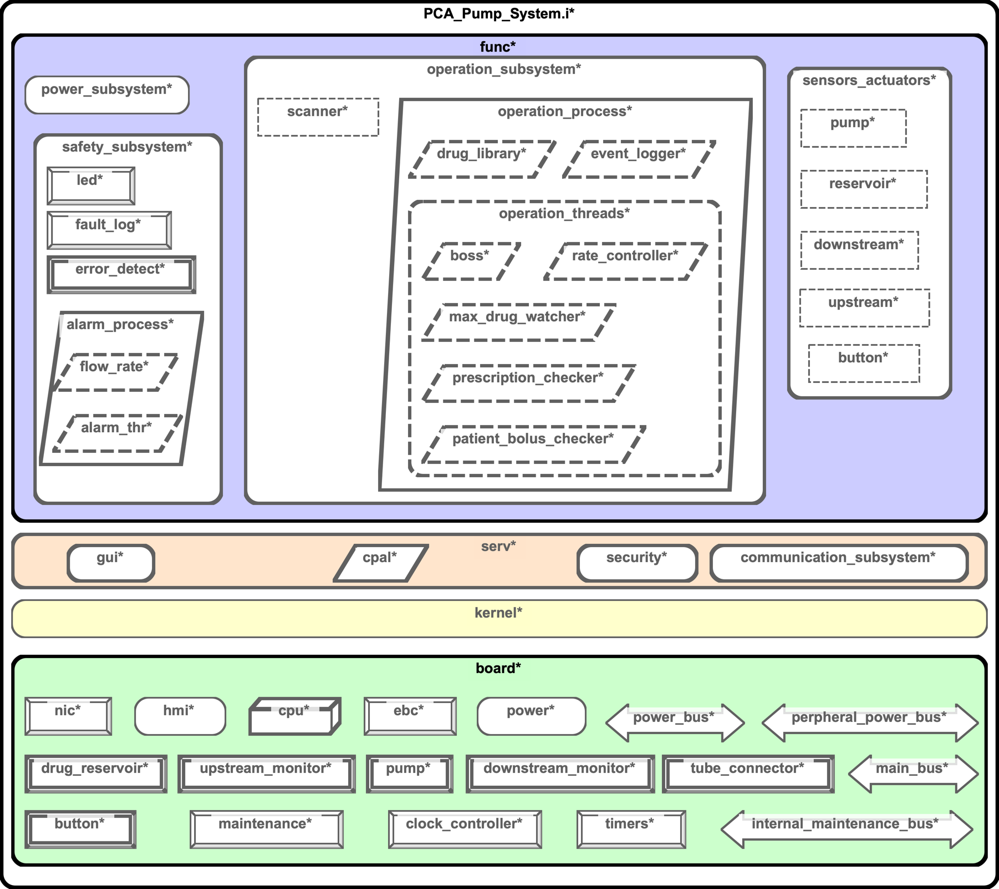
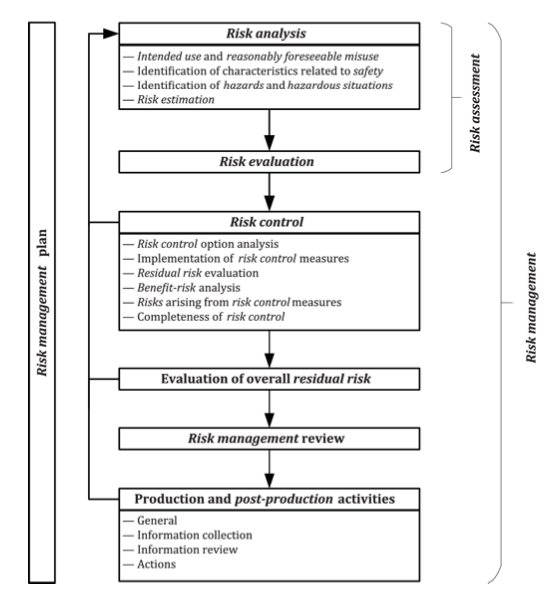
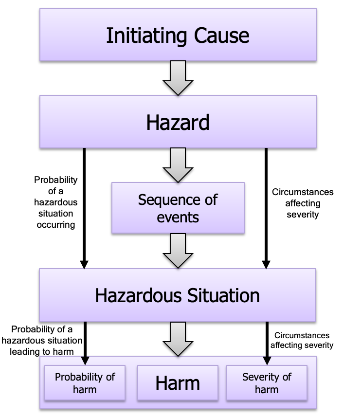
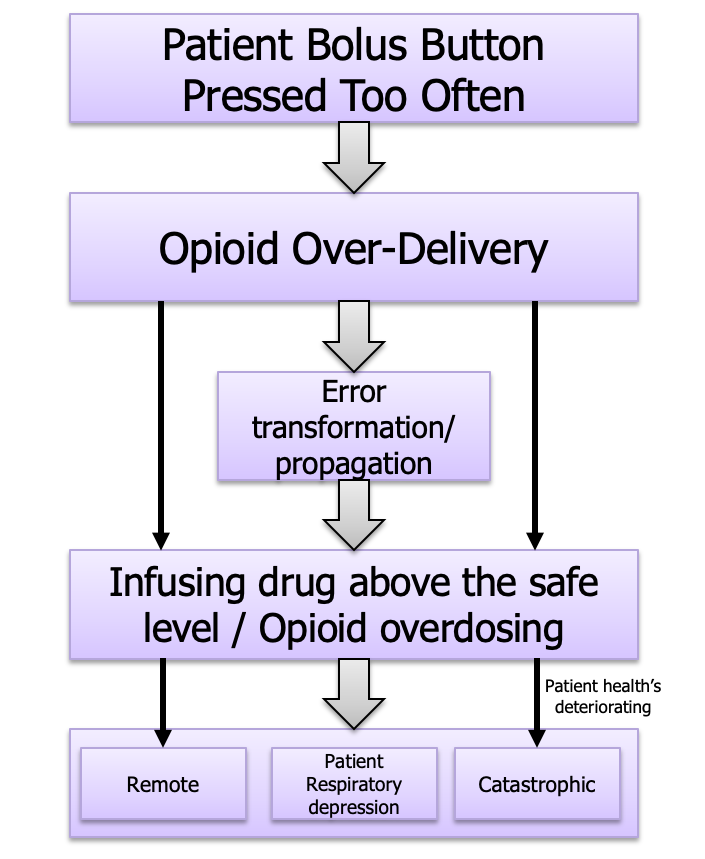
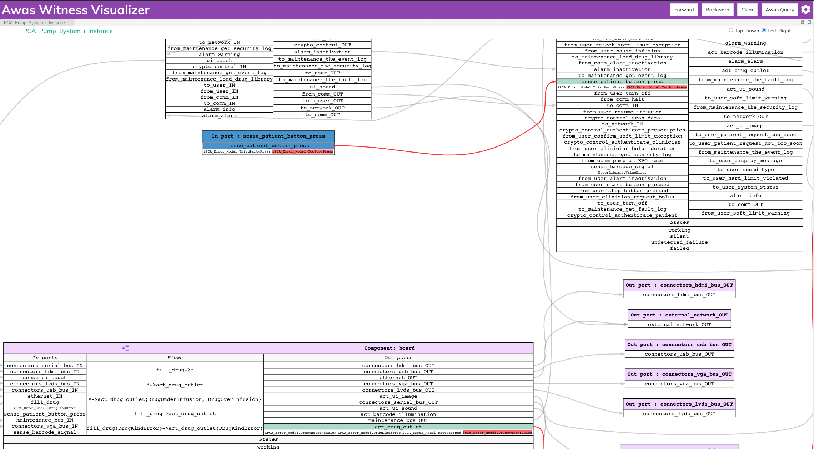
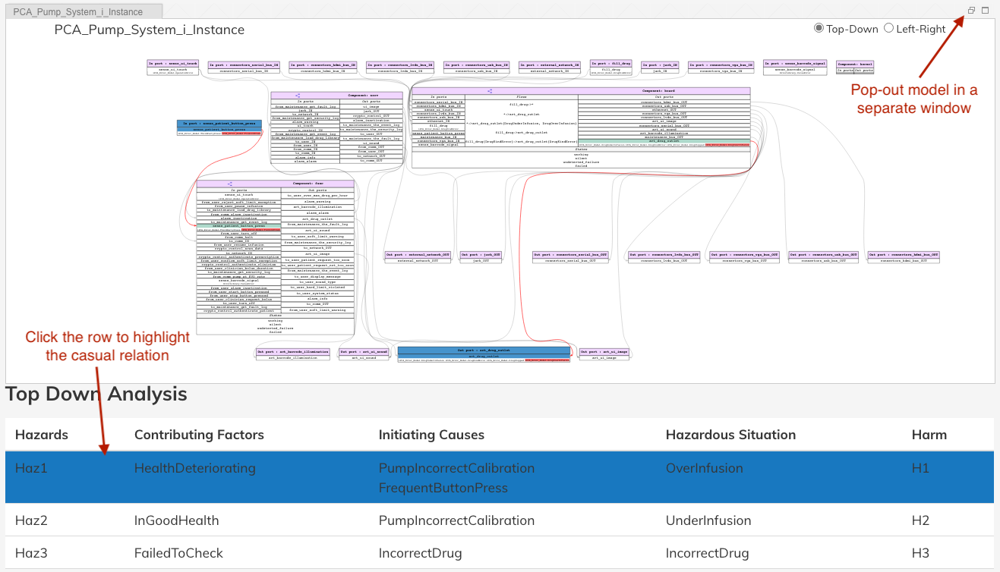

Sireum Awas Documentation
3. Risk Analysis
3. Sireum Awas Risk Analysis¶
In the context of Model-Based System Engineering (MBSE), risk management is an essential part of developing critical systems. Although interleaved into every facet of the system development process, artifacts generated in the process are necessary for obtaining regulatory certifications. Risk analysis, part of the risk management, consists of a tedious process of finding causes for reasonably foreseeable system failures. Awas’s reachability analysis and visualization capabilities are useful in exploring and communicating the failure scenarios and in ensuring the effectiveness of the measure taken to eliminate failures.
3.1. ISO 14971/AAMI 80001 (TL;DR Open PCA Pump Awas ISO 14971 Report)¶
In the medical domain, ISO 14971 is the widely adopted international standard for risk management. The following sections describe:
Description of the OpenPCA Pump medical device model
The application of ISO 14971 to Open PCA Pump model and the use of AADL properties to capture risk management concepts
Use of Error Modeling Version 2(EMV2) annex and Awas reachability analysis to accomplish crucial steps in the ISO 14971 risk management process
3.1.1. OpenPCA Pump Model¶
In this section, we illustrate (Open Patient Controlled Analgesic) Open PCA Pump medical device model. In the subsequent parts of this document, we use this model to demonstrate Awas’s application in the risk analysis process.
3.1.1.1. Background¶
{kind=link}
A PCA pump is a medical device used for pain management in a variety of clinical settings intended to administer opioids through intravenous(IV) infusion. Typically, a caregiver assembles the pump with the opioid and configures it based on the prescription. The prescription may include information such as the medication, quantity, rate of flow, and duration. On infusing the drug, the pump may operate on either in basal mode or bolus mode. In basal mode, the infusion of the drug happens at a constant rate of flow. In bolus mode, the pump operates at a high rate for a short period. The bolus (handheld switch) provided to the patient activates the bolus mode infusion. However, frequent activation of the bolus poses a severe overdose threat to the patient. Historically, PCA Pumps have harmed the patients and led to a patient’s death due to over infusion.
3.1.1.2. Design¶
We constructed the Open PCA Pump model based on the ISOSCELES medical device reference architecture. The reference architecture suggests the separation of functional components from the physical components. It also provides templates for generic subsystems such as operation, safety, user interface, network interface, power, and sensor/actuators.
{kind=link}
The top level of the functional subsystem separates the safety subsystem from the rest of the that detects and mitigates the faulty behaviors. Error modeling covers both physical and functional subsystems, and the errors flow from physical to functional subsystems and vise versa via the AADL bindings mechanism.
3.1.2. ISO 14971/AAMI 80001¶
ISO 14971 is a risk management standard intended for medical device manufacturers. In the medical device context, the risk is related to injury to the patient and other users such as clinicians. Risk analysis is a part of the risk management process in which Awas can assist an analyst in identifying, communicate, and mitigate risk.
{kind=link}
3.1.2.1. Risk Analysis¶
ISO 14971 concepts related to risk analysis
Harm: Injury or damage to the health of people, or damage to property or the environment
Hazard: Potential source of harm
Hazardous Situation: Circumstance in which people, property or the environment is/are exposed to one or more hazards
Initiating cause: Faults or other issues that lead to a hazard
The below figure illustrates the relationships between these terms.
{kind=link}
3.1.2.2. Risk Analysis Process¶
The medical device manufacturer performs risk analysis and records the risk analysis activities and their results in the risk management file. The regulatory authorities check for device compliance by inspecting the risk management file. The manufacturer shall perform the following risk analysis steps:
Identify intended use and reasonably foreseeable misuse
Identification of characteristics related to safety
Identification of hazards and hazardous situations
Risk estimation
3.1.2.3. Risk Analysis Sample Scenario¶
Consider the scenario where a patient presses the bolus multiple times in a short duration. If the pump infuses the drug each time, there is a possibility of overdosing the patient. In this scenario, over infusion is the hazard, and overdosing is the hazardous situation. The below figure provides the expected result of performing the risk analysis process for this scenario.
{kind=link}
3.1.3. AADL 14971 Property template¶
We took advantage of the user-definable property types feature of AADL and developed a set of properties to capture ISO 14971 concepts in an AADL model. Installing the Awas Osate plugin provides this template as part of the plugin contributions. The Awas plugin can be installed as described in section Sireum Awas pluging for OSATE.
1 2 3 4 5 6 7 8 9 10 11 12 13 14 15 16 17 18 19 20 21 22 23 24 25 26 27 28 29 30 31 32 33 34 35 36 37 38 39 40 41 42 43 44 45 46 47 48 49 50 51 52 53 54 55 56 57 58 59 60 61 62 63 64 65 66 67 68 69 70 71 72 73 74 75 76 77 78 79 80 81 82 83 84 85 86 87 88 89 90 91 92 | property set ISO14971_80001 is
with EMV2;
SystemInfo: record (
Name : aadlstring; --required
Description: aadlstring; --optional
IntendedUse: aadlstring; --optional
) applies to (system);
Causes: list of ISO14971_80001::Cause applies to ({emv2}**error source, {emv2}**error type, {emv2}**error behavior state, {emv2}**error event);
Hazardous_Situations: list of ISO14971_80001::Hazardous_Situation applies to (system);
Hazards: list of ISO14971_80001::Hazard applies to ({emv2}**error type, {emv2}**error behavior state);
Harm: type record (
ID: aadlstring; -- required
Description: aadlstring; -- optional
Severity: ISO14971_80001::SeverityScales; -- Catastrophic, High, Medium, Low, Negligible --optional
);
Cause: type record (
ID : aadlstring; -- required
Description : aadlstring; -- optional
Basis : ISO14971_80001::ProbabilityBasis; -- Causes per hour, or causes per number of occurrences
NumberOfOccurrencesPerCause : aadlinteger; -- how many occurrences are expected to produce one hazard?
Probability : ISO14971_80001::ProbabilityScales; -- Frequent, Probable, occasional, remote, improbable --optional
);
Hazard: type record (
ID : aadlstring; -- hazard unique identifier
Description : aadlstring; -- description of the hazard eg: opioid --optional
Causes : list of ISO14971_80001::Cause; -- optional, provide only if you wish to override
);
--circumstance in which people, property, or the environment are exposed to one or more hazard(s) (page 2)
Hazardous_Situation: type record (
ID: aadlstring;
Description : aadlstring; -- optional
Hazard : ISO14971_80001::Hazard;
Severity : ISO14971_80001::SeverityScales; -- optional, and computed. Provide value only if you wish to override
Paths_to_harm : list of record (
Harm: ISO14971_80001::Harm; -- e.g. patient overdosed/fatality
Contributing_Factors: list of ISO14971_80001::Contributing_Factor; -- e.g. Patient vitals are deteriorating
Probability_of_Transition: ISO14971_80001::ProbabilityScales; -- optional (used only for sorting and coloring)
); -- optional
Risk : ISO14971_80001::RiskLevels; -- optional, can be computed
Probability : ISO14971_80001::ProbabilityScales; -- optional
);
Contributing_Factor : type record (
ID : aadlstring;
Description : aadlstring; --optional
);
Risk_Control : record (
ID : aadlstring;
Description : aadlstring;
Effective_Probability: ISO14971_80001::ProbabilityScales; -- probability that the risk control mitigates an incoming error;
) applies to ({emv2}**error behavior state,
{emv2}**error event, {emv2}**error flow, {emv2}**error propagation);
------------------------------------------------------
------------------------Scales------------------------
------------------------------------------------------
SeverityScales: type enumeration (Catastrophic, High, Medium, Low, Negligible, Critical, Serious, Minor, NoEffect);
--for ISO 80001
Catatrophic: constant EMV2::SeverityRange => 1;
High: constant EMV2::SeverityRange => 2;
Medium: constant EMV2::SeverityRange => 3;
Low : constant EMV2::SeverityRange => 4;
Negligible : constant EMV2::SeverityRange => 5;
--ISO 14971 uses some different terms for severity
Critical : constant EMV2::SeverityRange => 2; -- Results in permanent impairment or life-threatening injury
Serious : constant EMV2::SeverityRange => 3; -- Results in injury or impairment requiring professional medical intervention
Minor : constant EMV2::SeverityRange => 4; -- Results in temporary injury or impairment not requiring professional medical intervention
NoEffect : constant EMV2::SeverityRange => 5; -- same as Negligible because EMV2::SeverityRange = [1..5]
ProbabilityScales: type enumeration (Frequent, Probable, Occasional, Remote, Improbable);
Frequent: constant EMV2::LikelihoodLabels => A;
Probable: constant EMV2::LikelihoodLabels => B;
Occasional: constant EMV2::LikelihoodLabels => C;
Remote: constant EMV2::LikelihoodLabels => D;
Improbable: constant EMV2::LikelihoodLabels => E;
RiskLevels : type enumeration (High, Moderate, Low);
--ISO 14971 allows risks to be quantified as the number of uses for each adverse event, on average
ProbabilityBasis: type enumeration (CausesPerHour, NumberOfOccurrencesPerCause);
end ISO14971_80001;
|
We demonstrate the purpose and use of this property template in the risk analysis of AADL models in the following walk-through section.
3.1.4. Risk Analysis Walk-though: Analyst Perspective¶
As the risk analysis process prescribes, the first step in risk analysis is to identify the intended use and misuse of the medical device. In the case of an Open PCA pump, the primary purpose of the pump is to infuse opioids for pain management. One possible misuse would be over infusing of the opioid to the level that it may harm the patient. Also, there is a possibility of delivering the wrong drug into the patient or in an incorrect dosage.
The next step would be identifying hazards and hazardous situations. A hazardous situation includes the possible triggering mechanism for hazards to develop in the system and the ways it can lead to harming the patient, clinicians, or the environment.
In an AADL model with error propagation, hazards are a particular combination of errors that may flow through the system’s external ports and harm the patient or the user of the device. In the case of the PCA pump, over-infusion on the port drug_outlet can cause an overdose in the patient when the patient’s health is deteriorating. With the following instantiation of ISO14971 properties, we can capture the hazardous scenario in the AADL model.
Hazard
Haz1 : constant ISO14971_80001::Hazard => [ ID => "Haz1"; Description => "Drug over-infusion"; ];
Hazardous Situation
OverInfusion : constant ISO14971_80001::Hazardous_Situation => [ ID => "OverInfusion"; Description => "Infusing drug when the patient's health is deteriorating"; Hazard => Hazards::Haz1; Paths_to_Harm => ([ Harm => Harms::H1; Contributing_Factors => (ContributingFactors::HealthDeteriorating); Probability_of_Transition => Remote; ]); Risk => High; Probability => Remote; ];
Harm
H1 : constant ISO14971_80001::Harm => [ ID => "H1"; Description => "Patient Overdosed"; Severity => Catastrophic; ];
Similar to the hazards, using the properties, an analyst can capture the initiating causes leading to the hazards. Followed by, with the help of tools such as fault impact analysis, Awas’s reachability analysis, etc. An analyst can compute the sequence of events from an initiating cause to a hazard. Thus providing a complete picture of a hazardous situation.
Initiating Cause
IncorrectDrug : constant ISO14971_80001::Cause => [ ID => "IncorrectDrug"; Description => "Incorrect drug loaded into pump"; Probability => Frequent; ];
We associate the EMV2 error type propagation with the ISO 14971 properties to compute the causality between the initiating causes and hazards. In the below property, we associate the earlier defined hazard ‘Haz1’ with the ‘DrugOver Infusion’ error propagating out of the system. Similarly, we can associate the cause ‘FrequentButtonPress’ with the error ‘TooSoonPress’ on port’ patient_button_press’. One can calculate the causality relation between the cause ‘FrequentButtonPress’ and hazard ‘Haz1’ by computing the reachability between these two port-error pairs.
Hazard
ISO14971_80001::Hazards => (Hazards::Haz1) applies to act.drug_outlet.DrugOverInfusion;
Cause
ISO14971_80001::causes => (Causes::FrequentButtonPress) applies to sense.patient_button_press.TooSoonPress;
3.1.5. Awas Visualization¶
{kind=link}
An analyst can use the Awas visualizer demonstrated in section Sireum Awas Visualizer to identify and communicate casual relationships to develop an appropriate mitigation strategy. Backward reachability from the port-error associated with the hazards can provide all the initiating causes and the following sequence of events that lead to the hazard. With the project causal path on the model, an analyst can identify missed out causes, appropriate mitigation strategy, and communicate with the rest of the engineering team.
The link below provides the visualization for the Open PCA Pump model.
Open PCA Pump Awas Visualization3.1.6. Awas Report¶
One of the contributions of this work is the ability to generate a report with casual scenarios. The report consists of tables comprising the harms, hazards, hazardous situations, initiating causes, and the relationship between the causes and hazardous situations in both forward and backward directions. The report also includes the model as represented in the Awas visualizer. However, this visualizer does not include the forward and backward reachability or the querying capability. Instead, it highlights the causal paths on clicking the table rows with causal relationships.
{kind=link}
For better viewing, the analyst can pop out the model into a bigger window and view casual relationships. Popping out the model visualization enables generating a printable version of the tables and including it in the risk management artifacts. The below link provides a sample report for the Open PCA Pump model.
Open PCA Pump Awas ISO 14971 ReportOne can generate similar report for any AADL model with EMV2 and the ISO14971 properties by following these steps:
Generate the instance model from the system implementation
Select the instance mode and select ‘OSATE -> Sireum HAMR -> Generate Risk Analysis Report’ from the menu
Specify a location to write out the generated report
Open the ‘risk-analysis-report.html’ in your favorite browser
We have tested the report generation in the latest version of Google Chrome, Microsoft Edge, Mozilla Firefox and Safari.